Получить навыки работы с физической рабочей областью Packet Tracer, а
также учесть физические параметры сети.
Задание
Требуется заменить соединение между коммутаторами двух территорий
msk-donskaya-sw-1 и msk-pavlovskaya-sw-1 на соединение, учитывающее
физические параметры сети, а именно — расстояние между двумя
территориями. При выполнении работы необходимо учитывать соглашение об
именовании.
Выполнение лабораторной
работы
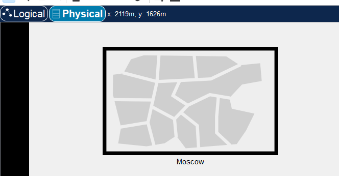
Физическая рабочая область Packet
Tracer
Выполнение лабораторной
работы
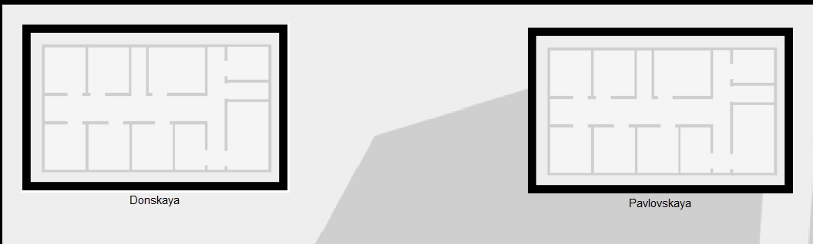
Изображение зданий в физической рабочей
области Packet Tracer
Выполнение лабораторной
работы
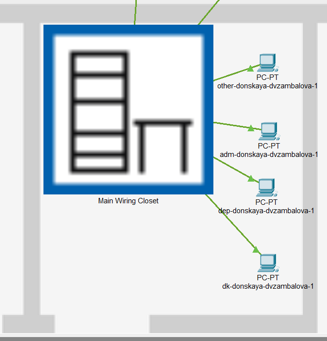
Размещение в физической рабочей области
Packet Tracer серверной с подключением оконечных устройств (сеть
территории «Донская»)
Выполнение лабораторной
работы
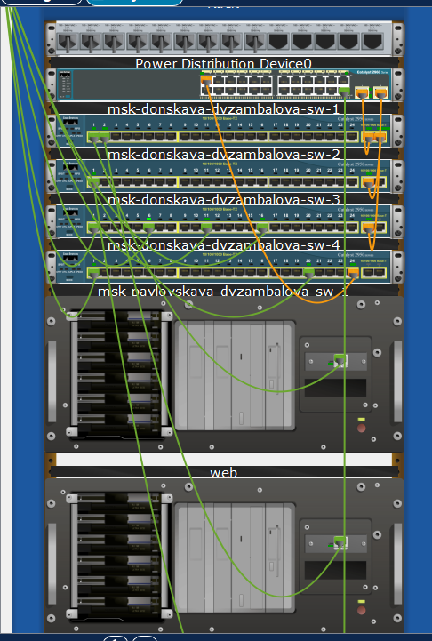
Отображение серверных стоек в Packet
Tracer
Выполнение лабораторной
работы
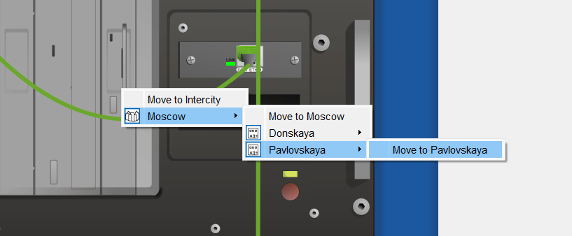
Перемещение устройств на другую
территорию
Выполнение лабораторной
работы
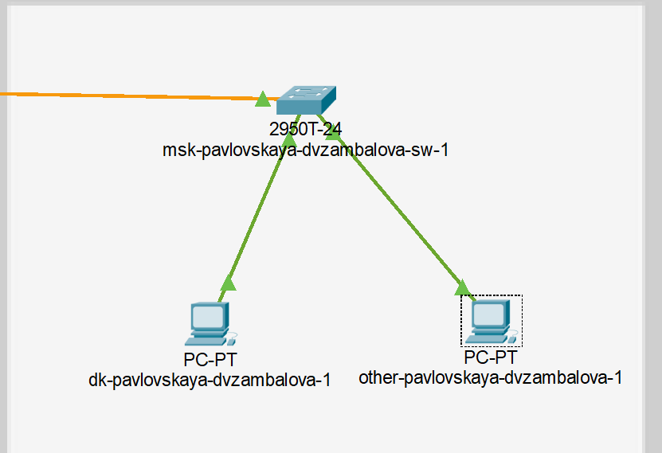
Размещение устройств на территории
“Павловская”
Выполнение лабораторной
работы
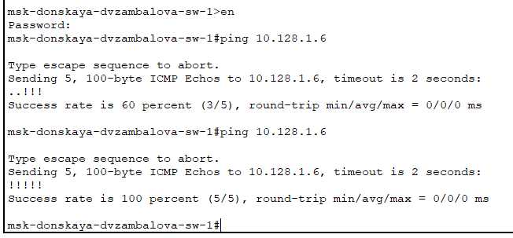
Проверка работоспособности
соединения
Выполнение лабораторной
работы
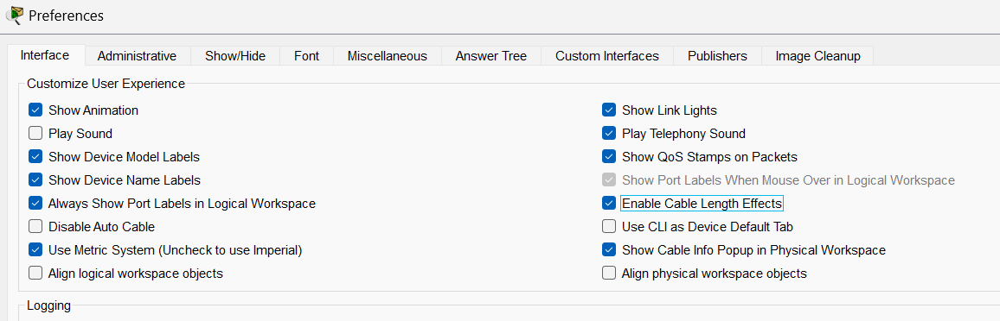
Активация разрешения на учёт физических
характеристик среды передачи
Выполнение лабораторной
работы
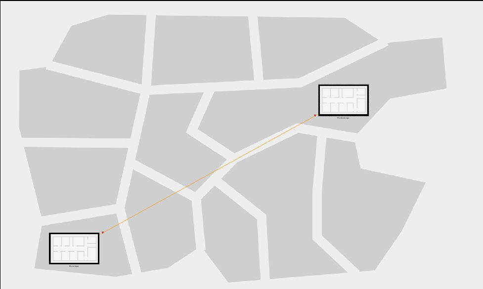
Размещение территорий на расстоянии более
100 м друг от друга
Выполнение лабораторной
работы
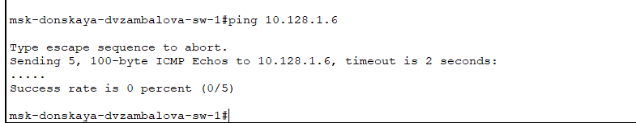
Проверка неработоспособности
соединения
Выполнение лабораторной
работы
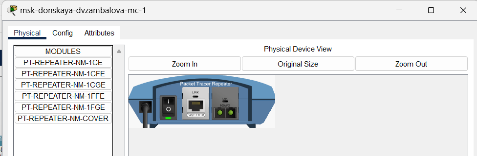
Повторитель с портами PT-REPEATER-NM-1FFE
и PT-REPEATER-NM-1CFE для подключения оптоволокна и витой пары по
технологии Fast Ethernet
Выполнение лабораторной
работы
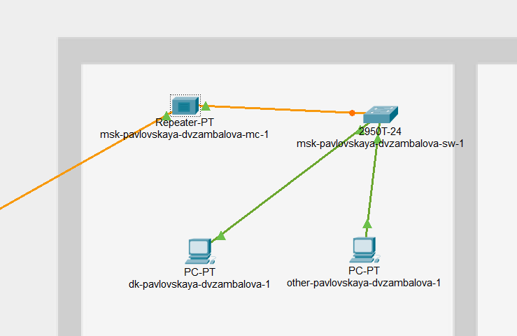
Перемещение msk-pavlovskaya-mc-1 на
территорию Pavlovskaya
Выполнение лабораторной
работы
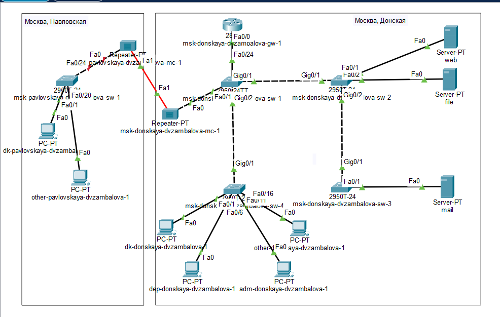
Схема сети с учётом физических параметров
сети в логической рабочей области Packet Tracer
Выполнение лабораторной
работы
Таблица портов {#tbl:fiz}
Устройство
Порт
Примечание
msk-donskaya-dvzambalova-sw-1
f0/24
msk-donskaya-dvzambalova-gw-1
g0/1
msk-donskaya-dvzambalova-sw-2
g0/2
msk-donskaya-dvzambalova-sw-4
f0/1
msk-donskaya-dvzambalova-mc-1
msk-donskaya-dvzambalova-mc-1
f0/0
msk-donskaya-dvzambalova-sw-1
f0/1
msk-pavlovskaya-dvzambalova-mc-1
msk-pavlovskaya-dvzambalova-mc-1
f0/0
msk-pavlovskaya-dvzambalova-sw-1
f0/1
msk-donskaya-dvzambalova-mc-1
msk-pavlovskaya-dvzambalova-sw-1
f0/24
msk-pavlovskaya-dvzambalova-mc-1
f0/1–f0/15
dk
f0/20
other
Выполнение лабораторной
работы
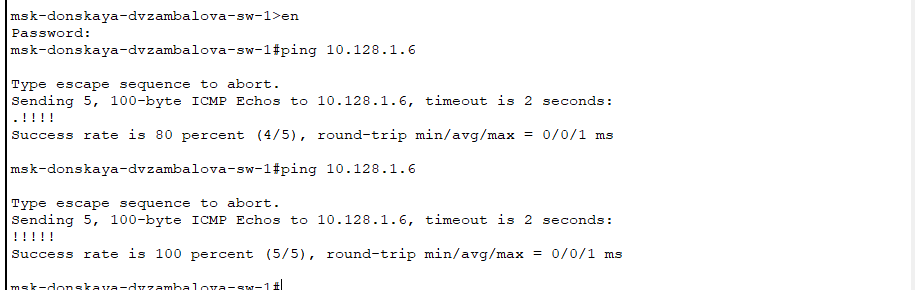
Проверка работоспособности
соединения
Выводы
В результате выполнения лабораторной работы я получила навыки работы
с физической рабочей областью Packet Tracer, а также учитывала
физические параметры сети.